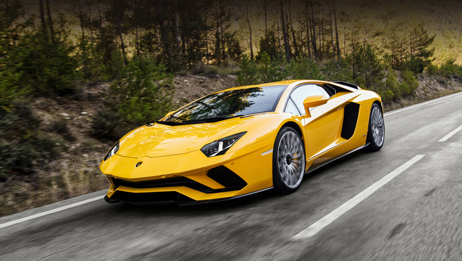
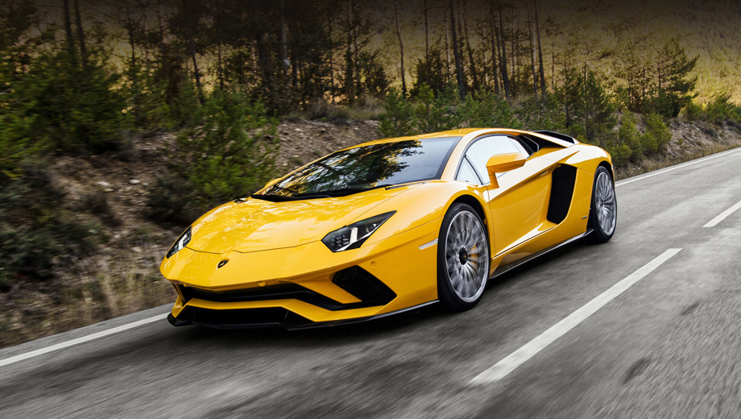

История компании
В начале 1960-х годов Ферруччо Ламборгини был владельцем нескольких компаний и мог себе позволить приобретать дорогие автомобили. В разное время у него были Mercedes 300SL, несколько Maserati 3500 GT, Jaguar E-type. Он также владел несколькими Ferrari 250 GT, разных версий. Но в каждом автомобиле он находил некоторые недочёты. Существует несколько версий о причинах, по которым Ламборгини основал собственную фирму. Все эти версии сводятся к конфликту между Энцо Феррари (владельцем компании Ferrari) и Ферруччо Ламборгини. Наиболее популярная версия, рассказанная сыном Ферруччо Ламборгини, гласит, что Ламборгини приехал на фабрику к Энцо Феррари пожаловаться на качество сцепления в своём автомобиле Ferrari 250 GT. Энцо отправил Ламборгини обратно с пожеланием и дальше заниматься тракторами, потому что в автомобилях, а тем более спортивных, Ламборгини ничего не понимает. Ламборгини вернулся на фабрику, разобрал трансмиссию в своём Ferrari 250 GT и обнаружил, что производитель многих деталей тот же, что и в тракторах Lamborghini. На своих складах он нашёл подходящую замену, и после сборки проблема была решена Полная история по ссылке